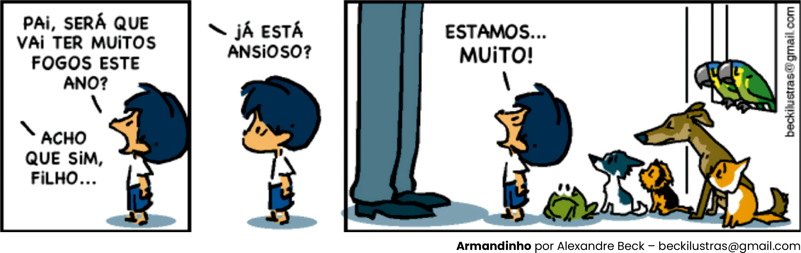

Para introduzirmos o transtorno de ansiedade, começaremos discutindo o que é a ansiedade. Leia a tirinha abaixo:
Na tirinha, vemos o personagem informando ao pai que ele e os animais encontram-se ansiosos. Mesmo que o evento ainda não esteja ocorrendo, o garotinho e os animais já expressam um desconforto emocional só de pensar que ele ocorrerá.
A ansiedade, portanto, pode ser definida como uma sensação inquietante, vaga e confusa, desagradável e de apreensão negativa em relação ao futuro.